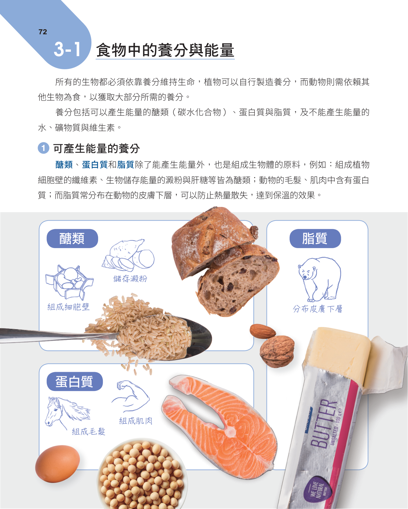
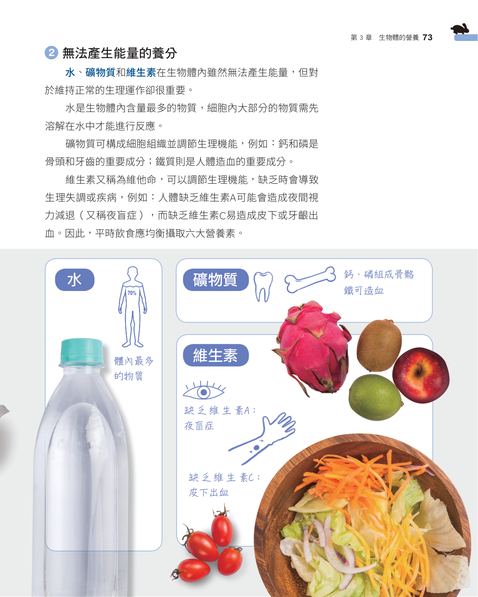
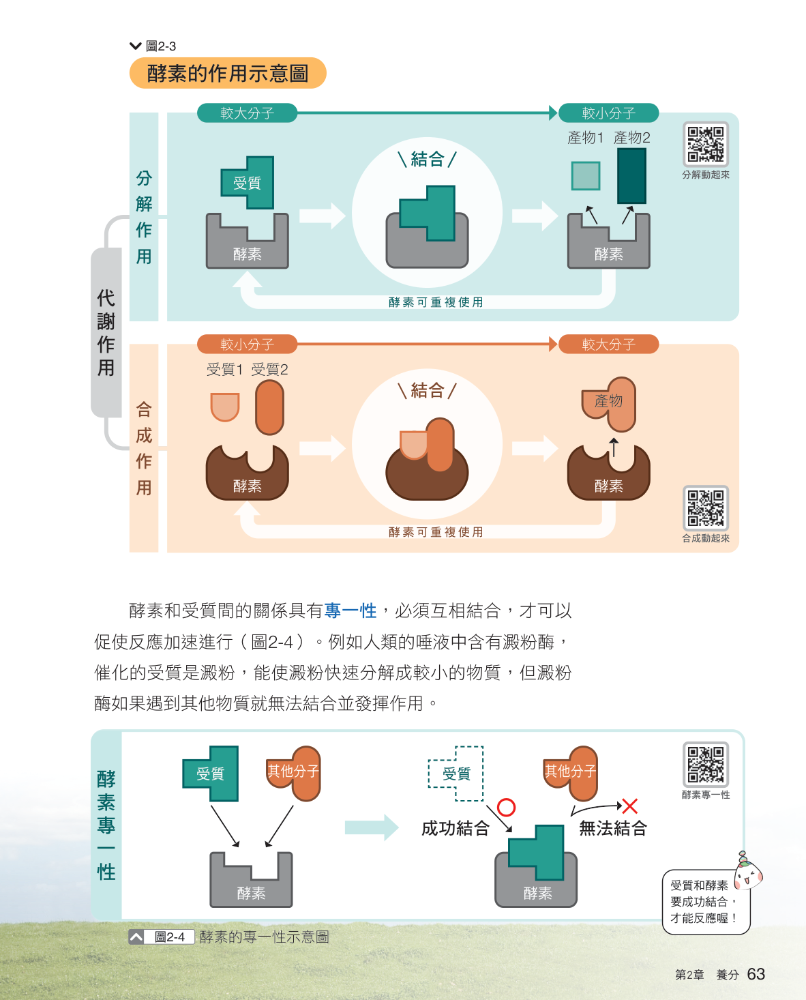
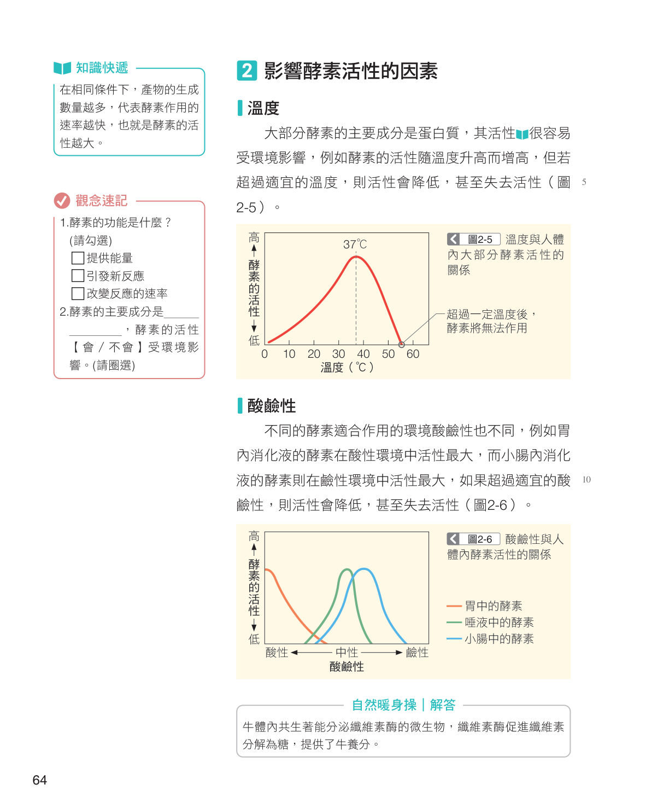
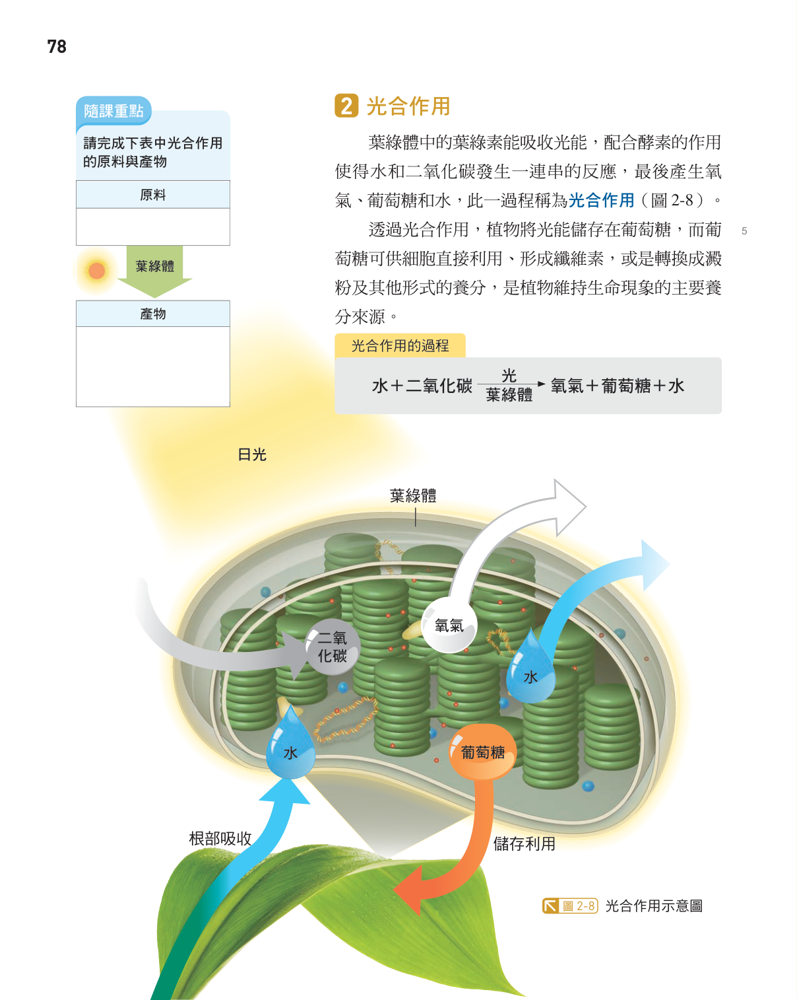
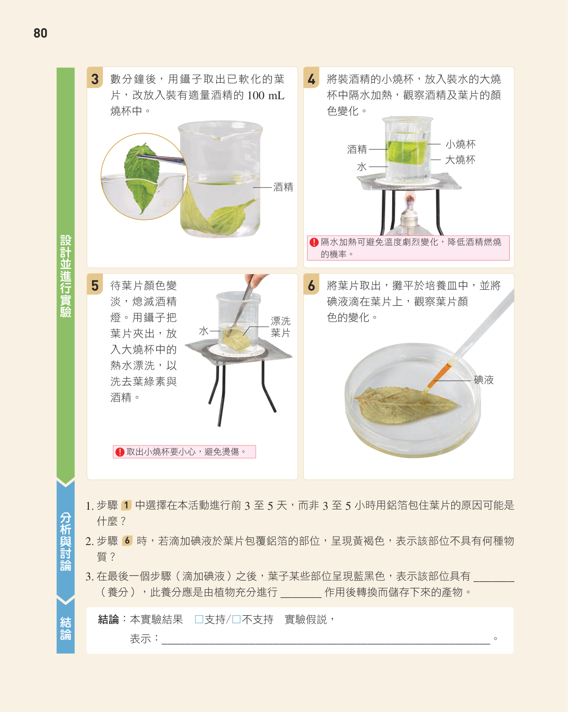
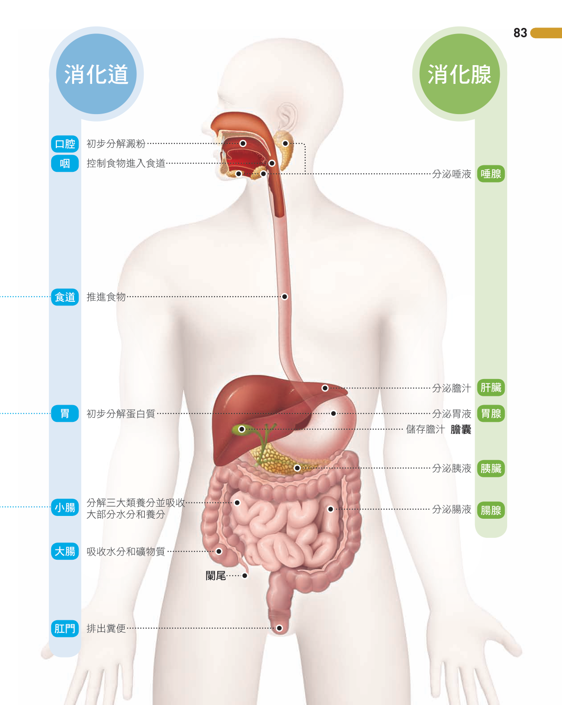

2-1 食物中的養分與能量
六大類養分・熱量單位・食物養分的檢測
重點筆記：六大類養分
食物中的養分依「能不能產生熱量」分成兩大類。三個版本的課本都用同一套六大類養分，只是舉例略有不同，整理如下表：
| 分類 | 養分 | 主要功能／組成 | 常見食物來源 |
|---|---|---|---|
| 可產生能量 | 醣類（碳水化合物） | 提供能量；澱粉、肝糖為儲存形式；纖維素組成植物細胞壁（人體無法消化，但可促進腸胃蠕動） | 米飯、麵食、地瓜 |
| 蛋白質 | 構成肌肉、頭髮、皮膚等身體構造；也是酵素的主要成分 | 魚、肉、蛋、豆類 | |
| 脂質 | 分布於皮膚下層，可防止熱量散失、幫助保溫；也是細胞膜的成分 | 食用油、堅果、奶油 | |
| 不能產生能量 | 水 | 體內含量最多的物質，多數代謝反應須溶於水中才能進行，也負責運送養分 | 飲水、湯、蔬果 |
| 礦物質 | 構成骨骼、牙齒（鈣、磷）；參與造血（鐵）等生理機能 | 乳品、深綠色蔬菜 | |
| 維生素 | 調節生理機能。缺維生素A易致夜盲症；缺維生素C易致壞血病（牙齦出血、復原力差） | 蔬菜、水果 |
重點筆記：食物中的熱量
測量食物所含熱量的常見方法，是燃燒食物加熱容器中的水，由水溫上升的幅度推估食物所含的熱量。熱量的常用單位是「卡」與「大卡（千卡）」：
每 1 公克「醣類」或「蛋白質」可產生約 4 大卡熱量；
每 1 公克「脂質」可產生約 9 大卡熱量（脂質是同重量下產熱量最高的養分）；
水、礦物質、維生素則不能提供熱量。
重點筆記：食物中養分的檢測
要判斷食物中是否含有澱粉或葡萄糖，可利用碘液與本氏液這兩種試劑：
| 試劑 | 檢測對象 | 是否需要加熱 | 呈色變化 |
|---|---|---|---|
| 碘液 | 澱粉 | 不需加熱 | 原為黃褐色，遇澱粉變成藍黑色（或紫紅色） |
| 本氏液 | 葡萄糖（醣類） | 需隔水加熱 | 原為淡藍色，加熱後隨葡萄糖濃度升高由綠、黃、橙漸變為磚紅色，顏色愈紅代表濃度愈高 |


小節練習 2-1 食物中的養分與能量
1. 下列六大類養分中，何者無法提供人體熱量？
- (A) 礦物質
- (B) 醣類
- (C) 蛋白質
- (D) 脂質
正確答案：(A) 礦物質
六大類養分中，醣類、蛋白質、脂質皆可經代謝產生熱量；水、礦物質、維生素則不能產生熱量，只負責調節生理機能或協助反應進行。(B)(C)(D) 皆屬於可產能的養分，故錯誤。
2. 某包裝食品的營養標示為：蛋白質 5 公克、脂質 25 公克、醣類 30 公克、鈉 50 毫克。此食品每份大約可產生多少大卡的熱量？
- (A) 335 大卡
- (B) 365 大卡
- (C) 270 大卡
- (D) 470 大卡
正確答案：(B) 365 大卡
蛋白質與醣類每公克產生4大卡，脂質每公克產生9大卡：5×4 + 25×9 + 30×4 = 20 + 225 + 120 = 365大卡。鈉屬於礦物質，不能產生熱量，不列入計算。其餘選項若代入不同養分的熱量係數計算則不吻合，故錯誤。
3. 小明想檢測白飯和果汁中分別含有哪些醣類，應該使用下列哪兩種試劑進行檢測？
- (A) 本氏液及酒精
- (B) 碘液及酒精
- (C) 碘液及本氏液
- (D) 本氏液及氫氧化鈉
正確答案：(C) 碘液及本氏液
碘液可檢測澱粉（白飯的主要成分），本氏液（需加熱）可檢測葡萄糖等醣類（果汁中常見）。酒精是光合作用實驗中用來去除葉綠素的溶劑，氫氧化鈉並非用來測定醣類，故 (A)(B)(D) 皆錯誤。
4. 長期缺乏維生素A，容易導致下列何種病症？
- (A) 壞血病
- (B) 貧血
- (C) 骨質疏鬆
- (D) 夜盲症
正確答案：(D) 夜盲症
維生素A與眼睛的感光機能有關，長期缺乏容易導致夜盲症。壞血病與缺乏維生素C有關(A)；貧血多與缺鐵有關(B)；骨質疏鬆與缺鈣有關(C)，皆非維生素A缺乏的典型病症。
5. 關於六大類養分的敘述，下列何者正確？
- (A) 纖維素屬於醣類，雖不能被人體消化吸收，但可促進腸胃蠕動
- (B) 水分無法溶解任何養分，只能用於調節體溫
- (C) 脂質完全無法產生熱量，只能用於保溫
- (D) 礦物質是六大類養分中，同重量可產生熱量最高者
正確答案：(A)
纖維素是醣類的一種，組成植物細胞壁，人體雖無法分解利用其產生能量，但可促進腸胃蠕動、有益腸道健康。水其實是很好的溶劑，許多養分須溶於水中才能被人體利用，故(B)錯誤；脂質每公克可產生9大卡熱量，是六大類養分中熱量密度最高者，故(C)(D)皆錯誤（礦物質完全不能產生熱量）。
2-2 酵素
代謝作用・酵素的四大特性：專一性、可重複使用、適溫、適pH
重點筆記：代謝作用與酵素
生物體內物質「分解」與「合成」的反應統稱為代謝作用：大分子分解成小分子稱為分解作用（如澱粉分解成葡萄糖）；小分子合成大分子稱為合成作用（如胺基酸合成蛋白質）。這些反應大多需要酵素（又稱酶）的參與才能順利進行。
酵素是一種能加速代謝反應進行的物質，主要成分是蛋白質；在代謝反應中，與酵素結合而被作用的物質稱為受質。
重點筆記：酵素的四大特性
| 特性 | 說明 |
|---|---|
| ① 專一性 | 一種酵素通常只能與特定的受質結合、進行特定反應。例如唾液中的澱粉酶只能與澱粉結合並分解澱粉，無法分解纖維素。 |
| ② 可重複使用 | 酵素在反應前後，本質不會改變，只要環境條件（溫度、酸鹼值）沒有劇烈改變，同一個酵素分子可以反覆與新的受質作用。 |
| ③ 受溫度影響（有最適溫度） | 在一定範圍內，溫度愈高，酵素活性愈大、反應愈快；但超過最適溫度後，酵素活性會迅速下降，甚至永久失去活性（變性）。人體內大多數酵素約在37℃左右活性最好。 |
| ④ 受酸鹼值（pH）影響 | 不同酵素有各自偏好的酸鹼環境：唾液中的酵素偏好中性、胃中的酵素偏好酸性、小腸中的酵素偏好鹼性；一旦超出可忍受的酸鹼範圍，活性會下降或喪失。 |


小節練習 2-2 酵素
1. 酵素的主要成分是下列何者？
- (A) 醣類
- (B) 蛋白質
- (C) 脂質
- (D) 維生素
正確答案：(B) 蛋白質
大部分酵素的主要成分是蛋白質，因此凡是能影響蛋白質特性的因素（如高溫、極端酸鹼），都可能改變酵素的活性。(A)(C)(D) 皆非酵素的主要組成。
2. 關於酵素特性的敘述，下列何者正確？
- (A) 酵素反應後會被分解，需要不斷合成補充
- (B) 一種酵素可以和多種不同的受質結合
- (C) 酵素和受質的結合具有專一性
- (D) 酵素只能在生物體外的實驗中發揮作用
正確答案：(C)
酵素和受質的結合具有專一性，一種酵素通常只能與特定的受質結合、進行特定反應，故(B)錯誤。酵素反應後本質不會改變，可以重複使用，並不會被分解掉，故(A)錯誤。酵素在生物體內、外都能發揮作用（例如消化道中及許多生技應用），故(D)錯誤。
3. 食物放在冰箱外比放在冰箱內容易腐敗，最主要的原因是什麼？
- (A) 冰箱內完全沒有細菌
- (B) 低溫會直接殺死細菌
- (C) 冰箱內沒有氧氣
- (D) 低溫使細菌體內酵素活性降低，代謝變慢
正確答案：(D)
低溫只是降低細菌體內酵素的活性，使代謝變慢，並不會殺死細菌，也不代表冰箱內完全沒有細菌，故(A)(B)錯誤；一般冰箱冷藏並非真空環境，(C)也不正確。
4. 關於胃與小腸中酵素所偏好的酸鹼環境，下列敘述何者正確？
- (A) 胃中酵素適合在酸性環境作用，小腸中酵素適合在鹼性環境作用
- (B) 胃中酵素適合在鹼性環境作用，小腸中酵素適合在酸性環境作用
- (C) 兩者都只適合在中性環境作用
- (D) 溫度是唯一會影響兩者活性的因素，酸鹼值並不影響
正確答案：(A)
胃液呈酸性，胃中的酵素在酸性環境中活性最佳；小腸中的酵素則在鹼性環境（由膽汁、胰液、腸液中和胃酸後形成）中活性最佳。酵素活性同時受溫度與酸鹼值影響，故(D)錯誤；(B)(C)與課本內容相反或不符。
5. 市面上標榜「吃酵素保健食品，可以補充人體細胞內的酵素」，這樣的說法是否適當？為什麼？
- (A) 適當，酵素能直接穿透腸壁進入細胞發揮作用
- (B) 不適當，吃進去的酵素會被消化道中的酵素分解成胺基酸
- (C) 適當，因為酵素不會被消化液分解
- (D) 不適當，因為酵素進入人體後會轉變成醣類
正確答案：(B)
酵素的主要成分是蛋白質，吞食後會如同其他蛋白質食物一樣，經消化道中的酵素分解成胺基酸吸收利用，並不能完整地進入細胞、補充細胞原本的酵素，故(A)(C)錯誤；酵素不會轉變成醣類，故(D)錯誤。
2-3 植物如何製造養分
葉的構造・光合作用的原料與產物・光合作用的實驗證明
重點筆記：葉的構造與功能
| 構造 | 功能 |
|---|---|
| 上表皮／下表皮 | 由排列緊密、透明的表皮細胞組成，具保護作用；外側具角質層，可防止水分過度散失 |
| 保衛細胞與氣孔 | 兩個半月形的保衛細胞成對圍成氣孔，可調節氣孔開閉，是氣體（如二氧化碳、氧氣）與水氣進出葉片的主要通道；保衛細胞本身也含有葉綠體 |
| 葉肉 | 含大量葉綠體，是植物行光合作用的主要場所 |
| 葉脈 | 屬於輸導組織，負責運送水分與光合作用產生的養分 |
重點筆記：光合作用
植物利用葉綠體中的葉綠素吸收光能，驅動一連串反應，將根部吸收的水與由氣孔進入的二氧化碳轉變成氧氣、葡萄糖和水，這個過程稱為光合作用。
水 ＋ 二氧化碳 —〔光、葉綠體〕→ 氧氣 ＋ 葡萄糖 ＋ 水
| 項目 | 內容 |
|---|---|
| 原料 | 水（由根部吸收）、二氧化碳（由氣孔進入） |
| 產物 | 氧氣、葡萄糖、水 |
| 場所 | 葉綠體（主要位於葉肉細胞、保衛細胞內） |
| 必要條件 | 光（光能） |
光合作用所產生的葡萄糖，除了可供細胞直接利用外，也可轉變成澱粉等形式儲存在植物體內，因此可以利用「檢測葉片中是否有澱粉」來證明光合作用是否發生過。
重點筆記：光合作用的實驗證明
三個版本課本都設計了類似的實驗來證明「光是植物進行光合作用的必要條件」，步驟大致如下：
① 先用鋁箔將葉片的一部分遮光數天，使該部位原有的澱粉被消耗、分解殆盡 → ② 將葉片移到陽光下照光一段時間 → ③ 摘下葉片，放入沸水中軟化，破壞角質層 → ④ 將葉片放入酒精中隔水加熱，去除葉綠素（方便觀察呈色結果）→ ⑤ 以熱水漂洗葉片 → ⑥ 滴加碘液觀察呈色：未遮光、有照光的部位因含澱粉而呈藍黑色；遮光未照光的部位則仍呈黃褐色（無澱粉反應）。
由於「照光的部位有澱粉、未照光的部位沒有澱粉」，可以證明：光是植物進行光合作用的必要條件之一。


小節練習 2-3 植物如何製造養分
1. 光合作用主要是在葉片中的哪一種構造進行？
- (A) 表皮細胞
- (B) 葉脈
- (C) 含有葉綠體的葉肉細胞
- (D) 角質層
正確答案：(C)
光合作用需要葉綠體參與，葉肉細胞含有大量葉綠體，是進行光合作用的主要場所（保衛細胞雖也含葉綠體、能少量進行光合作用，但主要場所仍是葉肉）。表皮細胞不含葉綠體、僅負責保護（A）；葉脈負責運輸水分與養分（B）；角質層只負責防止水分散失（D），三者皆不能直接進行光合作用。
2. 光合作用所需的二氧化碳，主要是經由葉片的哪個構造進入？
- (A) 氣孔
- (B) 葉脈
- (C) 根部
- (D) 表皮細胞
正確答案：(A) 氣孔
氣孔是氣體（包括二氧化碳、氧氣）進出植物體的主要通道。葉脈負責運輸水分與養分，並非氣體交換的主要構造(B)；根部負責吸收水分，不吸收二氧化碳(C)；表皮細胞主要功能是保護，不負責氣體交換(D)。
3. 下列何者不是光合作用的產物？
- (A) 氧氣
- (B) 葡萄糖
- (C) 水
- (D) 二氧化碳
正確答案：(D) 二氧化碳
光合作用的反應式為：水＋二氧化碳（原料）—〔光、葉綠體〕→ 氧氣＋葡萄糖＋水（產物）。二氧化碳是光合作用的原料而非產物，故選(D)；(A)(B)(C)皆是光合作用的產物。
4. 光合作用實驗中，為什麼要先用鋁箔把葉片的一部分包裹遮光數天，再進行照光處理？
- (A) 避免蟲害啃食葉片
- (B) 使葉片原本已有的澱粉先被消耗，才能確認照光後是否重新產生澱粉
- (C) 使葉片提前老化，方便撕除表皮
- (D) 防止葉片進行呼吸作用
正確答案：(B)
若不先消耗掉葉片原有的澱粉，之後即使照光部位測到澱粉，也無法確定是原本就有的、還是照光後新產生的，因此必須先遮光數天讓原有澱粉被分解殆盡，才能透過對照，確認澱粉是否為光合作用新產生。(A)(C)(D)皆非此步驟的主要目的。
5. 承上題，實驗中將葉片放入酒精中隔水加熱，其主要目的為何？
- (A) 殺死葉片細胞，方便後續操作
- (B) 使葉片變得比較柔軟
- (C) 去除葉片中的葉綠素，方便觀察滴加碘液後的呈色結果
- (D) 增加葉片的重量，方便秤重比較
正確答案：(C)
葉片中的葉綠素是綠色的，若不先去除，會影響之後滴加碘液時判斷藍黑色（有澱粉）或黃褐色（無澱粉）的呈色結果。使葉片變軟、破壞角質層的步驟是先前放入沸水中軟化的目的(B)，並非酒精加熱的主要目的；(A)(D)皆非本步驟目的。
2-4 動物與人體如何獲得養分
消化系統的組成・各器官的功能・消化與吸收的過程
重點筆記：消化作用與消化系統
食物中的大分子養分必須先分解成小分子，才能被人體吸收利用，這個過程稱為消化作用：
人體的消化系統由「消化道」與「消化腺」兩部分組成：
- 消化道：具有肌肉可以蠕動推送食物，依序為口腔→咽→食道→胃→小腸→大腸→肛門。
- 消化腺：負責分泌消化液（多含酵素），包括唾腺、胃腺、肝臟、胰臟、腸腺。
| 器官／腺體 | 分泌物 | 主要功能 |
|---|---|---|
| 口腔（唾腺） | 唾液（含酵素） | 牙齒切碎、舌頭攪拌食物；唾液中的酵素初步分解澱粉 |
| 咽、食道 | 無（食道不分泌消化液） | 依靠管壁肌肉的蠕動，將食物推送到胃 |
| 胃（胃腺） | 胃液（含鹽酸與酵素） | 暫存並攪拌食物；鹽酸可殺菌並促進胃中酵素作用；酵素初步分解蛋白質 |
| 肝臟 | 膽汁（不含酵素） | 先儲存於膽囊，經導管送入小腸；可乳化脂質，幫助脂質被分解 |
| 胰臟 | 胰液（含酵素） | 經導管送入小腸；可分解醣類、蛋白質、脂質 |
| 小腸（腸腺） | 腸液（含酵素） | 協助分解醣類與蛋白質；小腸內壁有大量絨毛，可增加吸收養分與水分的表面積，是主要的吸收器官 |
| 大腸 | 無（不分泌消化液） | 吸收食物殘渣中剩餘的水分，形成糞便由肛門排出（此排出過程稱為排遺） |

小節練習 2-4 動物與人體如何獲得養分
1. 下列何者屬於消化道的一部分，但本身並不具有分泌消化液的消化腺？
- (A) 食道
- (B) 胃
- (C) 小腸
- (D) 肝臟
正確答案：(A) 食道
食道屬於消化道，僅靠肌肉蠕動推送食物，本身不分泌消化液。胃有胃腺分泌胃液(B)；小腸有腸腺分泌腸液，並接受肝臟、胰臟的分泌物(C)；肝臟本身就是消化腺，分泌膽汁(D)，皆與食道情況不同。
2. 關於膽汁的敘述，下列何者正確？
- (A) 由胰臟分泌
- (B) 可以乳化脂質，幫助脂質的消化分解
- (C) 含有豐富的消化酵素
- (D) 主要在胃中發揮作用
正確答案：(B)
膽汁由肝臟分泌、儲存於膽囊，經導管送入小腸，功能是把脂質乳化成小顆粒，提高胰液分解脂質的效率；膽汁本身並不含消化酵素，故(C)錯誤。膽汁由肝臟而非胰臟分泌，故(A)錯誤；膽汁作用的位置是小腸而非胃，故(D)錯誤。
3. 食物中的蛋白質經過消化作用後，最終會分解成哪一種小分子，才能被人體吸收利用？
- (A) 葡萄糖
- (B) 脂肪酸
- (C) 胺基酸
- (D) 甘油
正確答案：(C) 胺基酸
蛋白質經消化作用分解後的小分子為胺基酸。葡萄糖是澱粉（醣類）消化後的小分子(A)；脂肪酸與甘油則是脂質消化後的小分子(B)(D)，皆與蛋白質的消化產物不同。
4. 小腸內壁具有大量的絨毛構造，其主要功能為何？
- (A) 分泌胃液
- (B) 儲存膽汁
- (C) 磨碎食物
- (D) 增加小腸吸收養分與水分的表面積
正確答案：(D)
小腸絨毛是指狀突起構造，可以大幅增加小腸內壁與食物接觸的表面積，提高養分與水分吸收的效率，絨毛內還有微血管負責運送吸收到的養分。分泌胃液是胃腺的功能(A)；儲存膽汁是膽囊的功能(B)；磨碎食物主要靠牙齒與胃的攪拌(C)，皆非絨毛的主要功能。
5. 食物在人體消化系統中依序經過的消化道器官，下列何者排列正確？
- (A) 口腔→胃→食道→小腸→大腸→肛門
- (B) 口腔→食道→胃→大腸→小腸→肛門
- (C) 口腔→咽→胃→食道→小腸→大腸
- (D) 口腔→食道→胃→小腸→大腸→肛門
正確答案：(D)
消化道的正確順序為：口腔→咽→食道→胃→小腸→大腸→肛門。(A)將胃與食道順序對調，錯誤；(B)將小腸與大腸順序對調，錯誤；(C)將食道與胃的順序對調，且未列出肛門，錯誤。